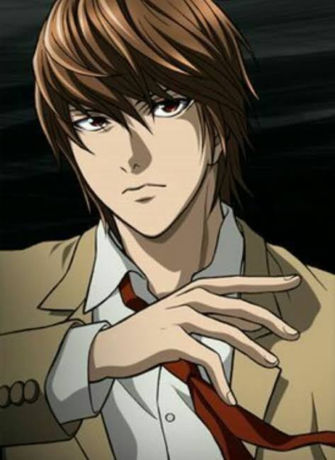
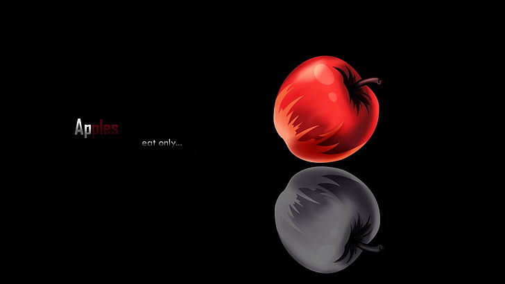
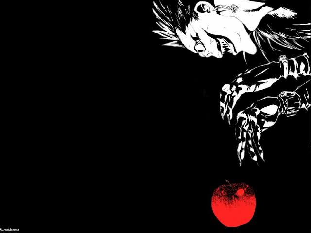

Without dreams, we reach nothing. Without love, we feel nothing. And without Allah, we are nothing
1
2
3
4
5
6
7
8
9
10
ruzaki
known as the l
anime death note
misa
known as the kira 2
anime death note
yagami light
known as the kira
anime death note



about anime
The "Shinigami", is a god of death, who can kill anyone provided he sees his face, and writes the name of his victim in a notebook called "Death Note". One day, Ryuk, bored with the Shinigami lifestyle, yearns to see how a human will use the Death Note, to drop one into the human world.
The genius high school student “Yagami Light” finds the death note, after seeing the instructions on it, and since he is already desperate for a scientist, he tests the killer note by writing the name of a criminal in it. When the criminal dies immediately after experiencing the Death Note, Light is greatly surprised, and soon realizes how destructive the force that fell into his hands is.
With this power that makes him like a god, Light decides to kill all criminals in order to build a new world in which crime does not exist, and people worship him as a god. But the police quickly discover that he is a serial killer who targets criminals, and therefore, they try to arrest him. To do so, Japanese detectives rely on the help of the best detective in the world: an eccentric young man known only as "the".